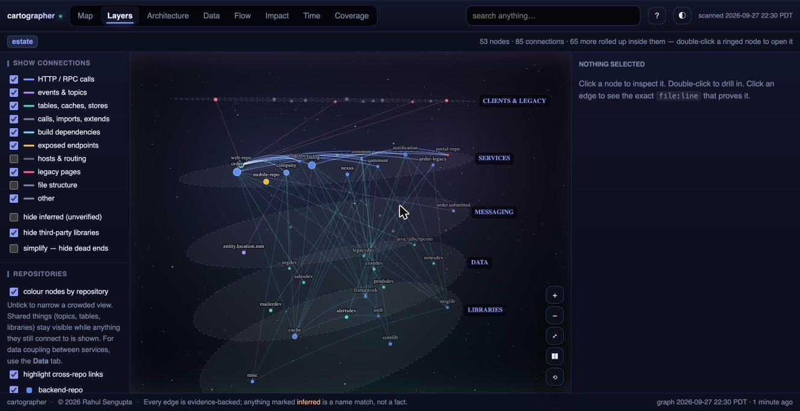
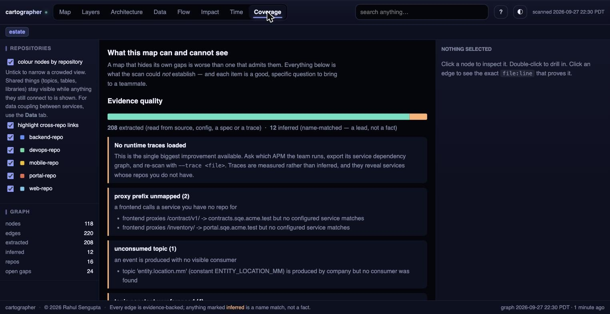

03 / 05
- Context
- Personal, solo
- Role
- Everything
- When
- 2026
- Status
- Open source, v1.1
- 5
- layers joined
- 126
- tests
- 0
- dependencies
Cartographer
Mapping a codebase you did not write
A static analysis tool that maps a multi-repo, multi-service estate and joins five normally separate layers into one graph, then exposes it to a browser, a CLI, and to Claude over MCP. Python standard library only, with no network calls in any code path.


The problem it exists for
No AST crosses a process boundary. A perfect symbol graph of order-svc will never show that it calls pricing-svc, because that edge exists only as the string PRICING_SERVICE_URL in a YAML file. Conversely, a service map knows nothing about functions, and neither one knows that two services quietly write to the same table.
Five layers, joined
Symbols come from source across nine languages. Modules come from Maven, Gradle, npm, and Go manifests. Services come from config, single-page-app proxy files, specs, and optional runtime traces. Data comes from migration SQL and the SQL embedded in hand-written DAOs. Behaviour, meaning hotspots, change coupling, and ownership, comes from git history.
Every symbol carries its service, which is what makes the join useful: a change to one method can be followed out through its repository and across a service boundary to the consumers. The individual techniques are all borrowed. The join is the contribution.
Uncertainty as a feature
Every edge is marked EXTRACTED, meaning read from source, config, a spec, or a trace, or INFERRED, meaning name-matched and therefore a lead rather than a fact. That distinction is visible everywhere, including in the UI, and a dedicated Coverage view lists what the scan could not establish.
A map that hides its own gaps is worse than one that admits them, because you eventually repeat it in front of someone who knows better.
Making a 145,000-node graph legible
A real estate produces on the order of 145,000 nodes. Drawn at once, that is not slow so much as illegible, and nobody learns anything from a grey hairball. So the graph collapses to whichever level you are looking at and rolls edges up with counts.
Measured on a 39,796-node graph, the estate view renders 26 readable nodes with 39,770 rolled up inside them, in 0.39 seconds. Nothing is discarded: a service-to-service arrow expands back into the individual calls that justify it.
Constraints that shaped it
Zero dependencies, Python 3.8 standard library only, and no server, because in regulated environments the reason good tooling does not get adopted is procurement rather than capability.
The force simulation, the 3D projection, and the diagram layout are hand-rolled rather than pulled from a CDN, since an outbound request simply fails on a locked-down machine. A test asserts that no asset references an external host.
$ ./install.sh # verify it runs here (~10s)
$ cartographer init --root . # discover repos, modules, proxies
$ cartographer scan # build the graph
$ cartographer ui # explore it, loopback only
$ cartographer impact OrderService.submit
$ cartographer audit # what the extractors MISSEDWhat it is actually good at
Finding coupling nobody documented: two services writing one table, a CREATE TABLE in one repository whose only writer lives in another, files in different repositories that change together in the same commits, which is a real dependency that no import graph contains.
And answering what breaks if I change this, across layers, with the exact file and line behind every claim, and reviewers drawn from who actually touched the code rather than from an org chart.
What building it taught me
The two worst bugs in the tool were silent recall failures: extractors quietly missing things while reporting success. That is why it ships an audit command comparing raw source against what was extracted, because a tool that maps a codebase has to be able to check its own coverage.
Related, and more general: several of my early assertions passed against deliberately broken code, because they measured something adjacent to the property they claimed to check. A new assertion is worth nothing until you have watched it fail.
Honest limits
The symbol backend is regex-based, roughly 70% recall against a real parser, and calls edges are name-matched rather than scope-resolved, which is why they are marked INFERRED. Dynamic dispatch, reflection, and dependency-injection wiring are invisible to static scanning, so scan accepts runtime traces as the answer to all three.
It is not state of the art at any single layer, and it says so. Techniques are cited where used: personalised-PageRank repo maps from aider, churn and change coupling from Adam Tornhill's work, provenance marking from Graphify. Absence of an edge is not proof of independence, and the tool says that everywhere too.
Stack Python 3.8+ standard library only · hand-rolled force, 3D, and diagram renderers · MCP server over stdio exposing 14 tools · 126 Python tests plus a renderer smoke suite across roughly 1,500 camera states